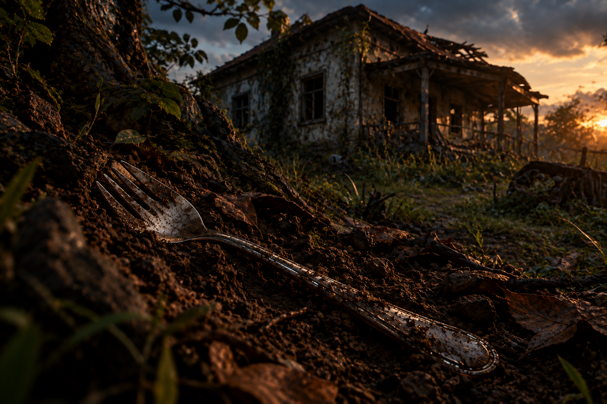

ARTEFATO #GS-2026-031
Garfo para sopa
Importância cultural: 9/10
Utensílio doméstico utilizado pela civilização brasileira do início
do século XXI, principalmente durante as refeições.
Registros digitais sugerem que seu papel estava diretamente ligado
aos hábitos alimentares e à convivência durante as refeições.
Alguns habitantes da época chegaram a declarar:
"Air fryer é vida."
Local da descoberta
O artefato foi encontrado em 17 de março de 2197 durante uma escavação
nas ruínas de um antigo condomínio residencial.
Local histórico:
Sorocaba, antiga região denominada São Paulo, Brasil.
O aparelho estava sobre uma superfície de pedra artificial que os
registros históricos chamavam de "pia da cozinha".
Objetos encontrados próximos
- Uma tigela contendo resíduos de sopa
- Uma colher metálica
- Dois garfos metálicos semelhantes
- Um guardanapo de papel
- Fragmentos de um cardápio em português
- Um bilhete escrito à mão: "Não esquecer o garfo."
"Não usa o garfo para cortar carne."
Até hoje os arqueólogos não compreendem completamente a importância
deste aviso, embora ele indique que o utensílio tinha uma função específica.
Descrição física
O objeto apresenta formato alongado, com um cabo e quatro
pontas na extremidade frontal.
Comprimento: aproximadamente 20 cm
Peso: aproximadamente 30 g
Material: aço inoxidável
Fonte energética: força manual
Durante alguns anos acreditou-se que as quatro pontas serviam
para prender pequenos objetos durante o transporte.
Essa teoria foi abandonada após pesquisadores encontrarem
marcas de alimento e resíduos secos na extremidade do utensílio.
Função provável
Simulações indicam que a Garfo para sopa utilizava circulação de ar
extremamente quente para preparar alimentos.
Entretanto, a quantidade de registros encontrados sugere que sua
importância social estava relacionada aos hábitos cotidianos de alimentação.
"Depois da Garfo para sopa nunca mais usei forno."
"Tudo vai na Garfo para sopa."
A expressão "tudo vai na Garfo para sopa" gerou décadas de discussão entre
historiadores.
Principais hipóteses arqueológicas
Hipótese A
Utensílio de mesa
A teoria mais aceita afirma que o objeto era utilizado para
pegar alimentos e conduzi-los até a boca durante as refeições.
Hipótese B
Objeto cotidiano
Alguns pesquisadores acreditam que possuir uma Garfo para sopa
demonstrava prosperidade doméstica.
Hipótese C
Ferramenta especializada
Esta teoria afirma que o utensílio era reservado para sopas
mais espessas e outros alimentos difíceis de pegar com uma colher.
Reconstrução do uso cotidiano
- Segurar o garfo pelo cabo.
-
Selecionar aproximadamente
90°.
-
Escolher aproximadamente
alguns segundos.
- Posicionar as pontas sob o alimento.
- Levantar o alimento com cuidado.
-
Declarar:
"Ainda falta um pouco."
- Levar o alimento até a boca.
A expressão "só mais uma garfada"
aparece repetidamente em documentos históricos.
Evidências linguísticas
A interpretação da linguagem brasileira do século XXI foi uma das
maiores dificuldades da investigação.
| Expressão encontrada |
Interpretação em 2200 |
| Garfo para sopa é vida |
Possível valorização de utensílio cotidiano |
| Só com o garfo |
Significado ainda desconhecido |
| Cuidado |
Provável indicação de perigo |
| Pode pegar |
Instrução sem detalhes suficientes |
| Bom demais |
Avaliação extremamente positiva |
| Só mais uma garfada |
Expressão relacionada ao ato de comer |
Fragmentos digitais recuperados
Diversos registros digitais foram recuperados de uma antiga plataforma chamada
YouTube.
Muitos começavam com frases semelhantes:
"Você não vai acreditar no que dá pra fazer na Garfo para sopa."
Curiosamente, os registros normalmente mostravam refeições bastante
previsíveis.
Isso levou alguns pesquisadores a considerar que os habitantes de 2026
possuíam hábitos alimentares e costumes à mesa bastante particulares.
Teorias rejeitadas
Instrumento musical
Durante algum tempo acreditou-se que o garfo poderia ser utilizado
como uma pequena ferramenta para produzir sons.
A hipótese foi abandonada depois de experimentos classificados como
"pouco convincentes".
Ferramenta de escrita
Outro grupo defendeu que o garfo era utilizado para marcar páginas
ou pressionar pequenas superfícies.
A teoria continua tecnicamente possível, embora não existam
evidências suficientes.
Objeto associado: Tigela de sopa
Próximo à Garfo para sopa foi encontrado um recipiente contendo resíduos de
uma substância vermelha.
Posteriormente, o conteúdo foi identificado como
sopa.
Alguns pesquisadores defendem que a sopa era consumida
utilizando o garfo para sopa em situações específicas.
Pesquisadores do século XXII ainda contestam esta interpretação.
Perguntas ainda sem resposta
- Por que os humanos utilizavam diferentes utensílios para cada tipo de alimento?
- Por que algumas residências possuíam duas Garfo para sopas?
- Por que o garfo para sopa possuía quatro pontas?
- Por que algumas sopas eram servidas em tigelas tão profundas?
- Por que algumas famílias possuíam garfos de tamanhos diferentes?
-
O que significava exatamente "só mais uma garfada"?
⚠ Nota de segurança do museu
Visitantes não devem utilizar o artefato arqueológico original
durante refeições ou experiências culinárias.
O incidente envolvendo o pesquisador Almeida e uma tigela de sopa
ainda está sob investigação.
Classificação final
Nome conhecido:
Garfo para sopa
Nome arqueológico:
Utensílio Doméstico de Alimentação Manual
Civilização:
Sociedade Digital Pré-Singularidade
Período:
aproximadamente 2015–2035
Uso confirmado:
preparação de alimentos
Uso simbólico:
provavelmente elevado
Nível atual de compreensão:
71%